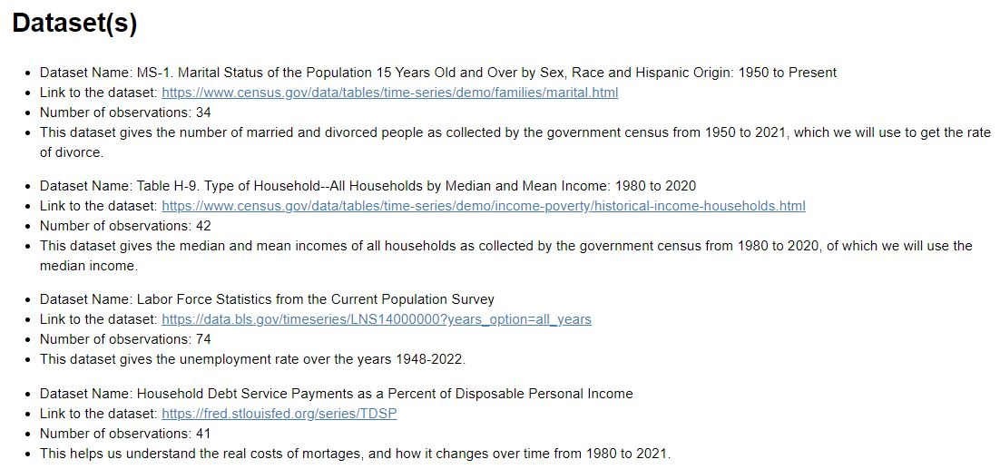
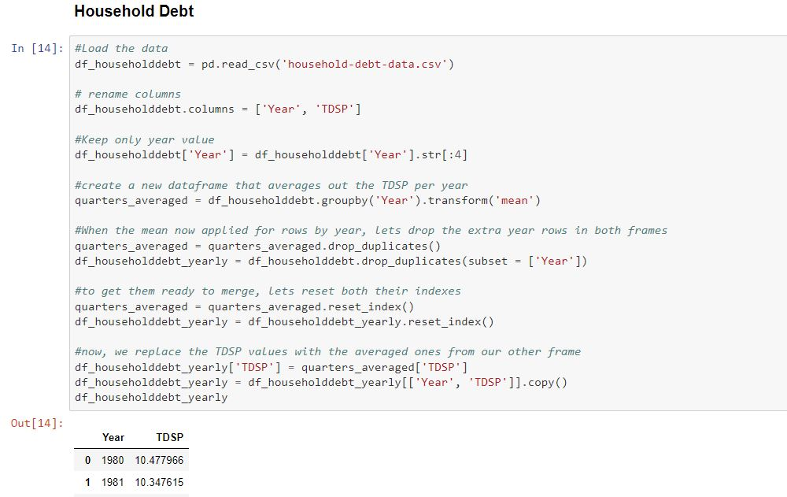
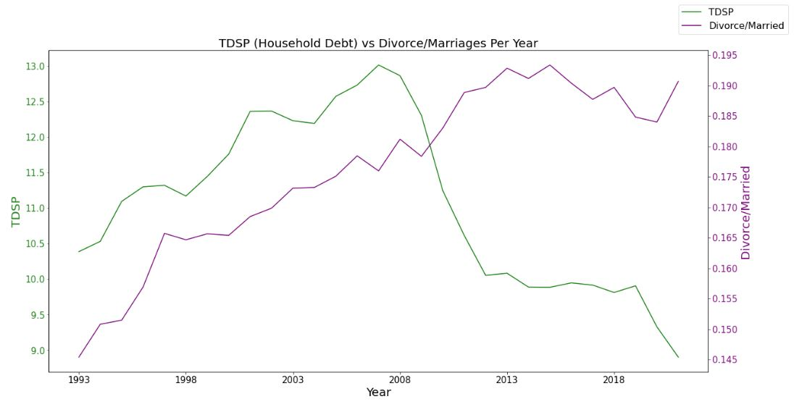
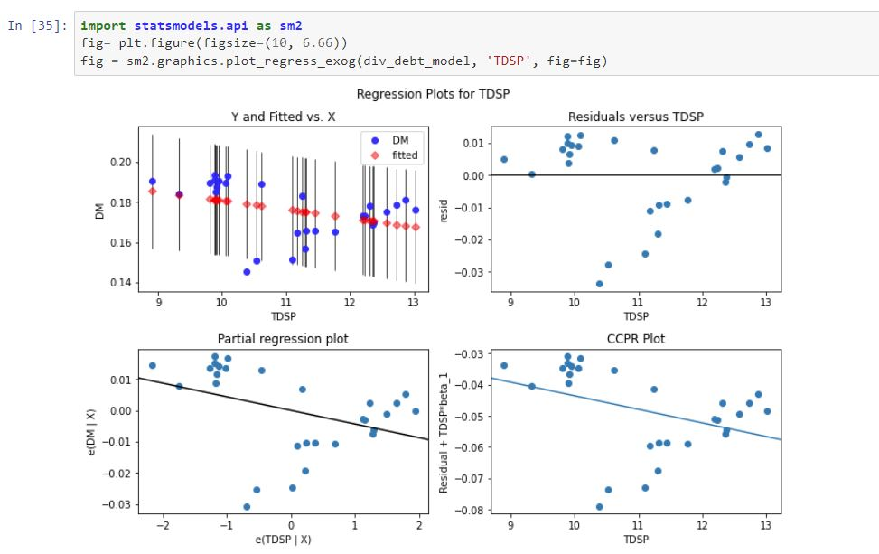
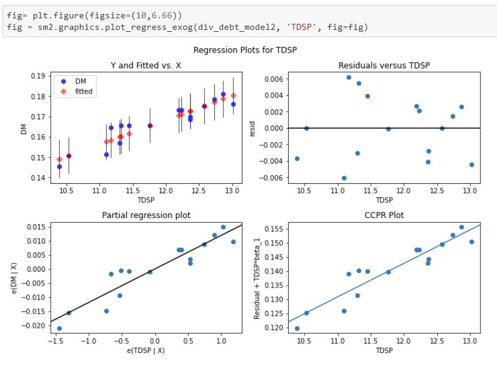

Divorce Rates and Economic Conditions
Data Science —
Python
Pandas
Matplotlib
Statsmodels
UCSD - COGS 108 Wi '22
Background
Cogs 108, Data Science in Practice, is a hands-on, practical course intended to give students experience working on data science projects. The course goals are to formulate a plan for and complete a data science project from start (question) to finish (communication). This includes identifying and explaining how to approach an unfamiliar data science task, carrying out descriptive, exploratory, inferential, and predictive analyses in Python, and communicating results concisely and effectively in reports and presentations.
Project Proposal and Datasets
My team and I wanted to analyze divorce rates and divorce culture in the United States. We first did background research on the reasons for divorce to identify some variables we could use for a data science project. One reason for divorce are issues with finances or with money management, and we were curious to see what outside variables might impact this. We began looking at variables related to the health of the economy to see whether people were more likely to get divorced based on economic turmoil or prosperity. A big question for us was whether economic stress disincentive divorce due to the personal financial risks that come with it, or whether economic stress incentivized divorce by worsening intermarital issues relating to finance and money management. In order to answer this, we modeled how divorce rates in the United States change with unemployment rates, household income, and household debt. We felt these variables gave a good sense of the economic situation of real Americans and that they would be fitting for our analysis.
Data Cleaning
We built our project in a Jupyter Notebook and started by cleaning our data. Each member of the group cleaned a particular dataset using Pandas dataframes. We dropped duplicates, removed NaN values, reset indexes, removed extra white spaces, dropped unneeded columns, and more.
EDA
We then did exploratory data analysis to understand the numbers we were working with. For each variable, we plotted line graphs and histograms to understand the distribution and the change over time. We used seaborn and matplotlib for our graphs. I handled the TDSP section and found that the data indicates that Divorce/Married increased with TDSP until the 2008 recession. After the 2008 recession, Divorce/Married continues to increase, wheras TDSP continues to decrease. Based on this graph, it is clear the variables don't necessarily move in the same directions at the same times, though there is evidence that both variables tend to change with the similar volatilities. When TDSP rapidly decreased after 08, Divorce/Married rapidly increased, which is seen again in 2020 during the economic turmoil of the Coronavirus pandemic.
Regression Analysis and Results
Using statsmodels, patsy, and scipy, we conducted regression analyses to see if there is any correlation between divorce rates and our variables. Our null hypothesis is that there is no relationship between the variable and divorce rate and our alternate hypothesis is that there is a relationship between the variable and divorce rate. If we can get a p-value that is small (less than 0.05), then we can reject the null hypothesis and conclude that there is a significant correlation between the variable and divorce rate.
I started off by using statsmodels to create a regression. Then I printed out exploratory data about our model to understand how accurate it was. Immediately, things stood out.
- low R squared value shows our regression line is poor
- T value is bigger for our intercept than for TDSP, further evidence our regression is poor
- F stat is small and the difference between adjusted F stat and F stat is not particuarly big
- residuals are not normally distributed
Result: No strong correlation. P is greater than alpha. Accept the null hypothesis. Only 14% of the variance in Divorce/Married corresponds to variance in TDSP.
The Problem
The model created above clearly does not do a good job at modeling the relationship between the two variables, and this can be attributed to the way TDSP decreased after 2008. After 2009, the economy was relanaced and the measure of household debt decreased. What this points to is that economic turmoils can cause radically changes that literally 'break' certain variables. Because TDSP is calcualted as the total required household debt payments to total disposable income, rebalancing after the recession either caused total disposable income to increase dramatically, or household debt payments changed radically. Given the 2009 recession's ties to subprime mortrages, it is likely that the household debt payments changed substantially. For this reason, it may be intersting to understand how TDSP and Divorce/Married were correlated before this economic turmoil dramatically changed TDSP. Below, I remove the rows after 2009, and do a second regression on the data before 2009.
Using data up to 08'
This second regression on the data up till 2008 shows we have a much better model and the two variables have a stronger correlation.
- R squared value is very high and is close adjusted R squared, showing our model is a good fit
- The residuals are more evenly spread.
- P values are similar for both, showing both variables are significant to the regression, evidence of good fit
- F-Prob is very small, and F-Statistic is very large, showing more evidence of a linear relationship
- Despite this, it must be pointed out that this has a considerably smaller sample size.
Result: Strong correlation. P is smaller than alpha so we reject the null hypothesis. 87.3% of the variance in Divorce/Married corresponds to variance in TDSP.
Note: This shows how easy it is to manipulate data to create a model that works. I'm just doing this to see what a strong model would look like, not to actually try and answer the question!
What I learned
This project gave me a strong set of skills in Pandas and with python libraries for data analysis. I learned that variables related to economic conditions can change dramatically and can prove not to be good predictors even if they have a history with a strong correlation. I also learned that it is challenging to create a good model, and that it is critical to pick the correct variables. A big secondary question for us was whether economic stress disincentivizes divorce due to the personal financial risks that come with it, or whether economic stress incentivized divorce by worsening intermarital issues relating to finance and money management. I don’t think we did the greatest job at answering this question given our data. If we were to do this project again, I think we could have more insight on the nuances of that question.
Link to Project